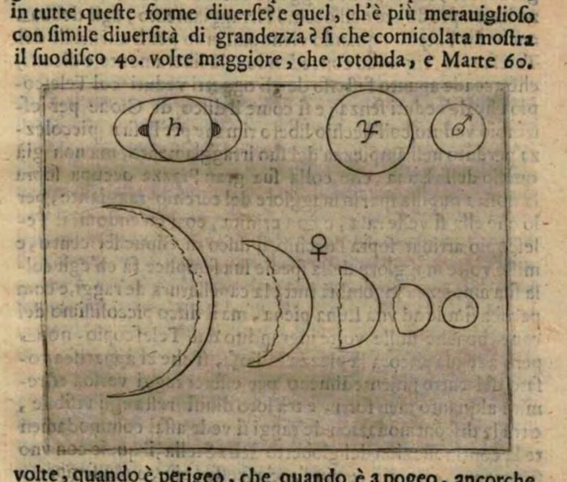

Tycho Brahe kept Copernicus' arrangement of the planets about the Sun, and held the Earth fixed: the Sun goes round the Earth once a year, carrying the planets with it. Seen from the Earth, every planet keeps the direction Copernicus gave it, so the two systems cannot be told apart by the planets' places in the sky.
Two questions are at stake, and they are easily confused. One is which body is taken as at rest, the frame. The other is how the motions are linked, in what order the planets lie and at what distances, the arrangement. The planets' directions cannot decide the first. The second can be decided, by observations of another kind: the phases of Venus and the yearly shift of the stars.
1 · ObservationVenus through a telescope
To the eye Venus is a bright point. Through a telescope it has a disk, and in Figure 1 we follow that disk through one synodic period, from the superior conjunction of 4 June 2024 to the next, on 6 January 2026.
(a) east of the Sun, in the evening sky
(b) west of the Sun, in the morning sky
In the figure
- dashed
- the unlit part of the disk (east is to the left)
- under each disk
- the date and the elongation
Between the two conjunctions Venus passes through every phase of the Moon, and near inferior conjunction, a thin crescent, it is 6.2 times as wide as when it is full beyond the Sun.
A change of size was an old objection to the epicycle of Venus. Andreas Osiander, in the unsigned note "To the Reader" that opens De Revolutionibus, asked whether anyone failed to see that it made "the diameter of the planet at perigee … appear more than four times, and the body of the planet more than sixteen times, as great as at apogee", a variation "refuted by the experience of every age". The eye could not see the disk, and the telescope showed that the variation is real.
The phases had been argued about before anyone could see them. Copernicus reports the followers of Plato: since the planets shine only by the Sun's light, Venus and Mercury, "if they were below the sun, … would be seen halved or at any rate less than fully round" (I 10).
That was the open question of Ptolemy's order. The older astronomers put the spheres of Venus and Mercury below the Sun's, some of their successors above it. Since "none of the stars has a noticeable parallax", Ptolemy kept the older order as the more plausible (IX 1). His models fix each planet's directions, not its distance.
2 · ModelFrames and arrangements
What a change of frame leaves unchanged
To see why no direction can show which body is at rest, let $\vec x_\text{O}(t)$ be the place of the Earth and $\vec x_\text{P}(t)$ that of a planet in some description of the system. What the observer on the Earth measures is the direction of $\vec x_\text{P} - \vec x_\text{O}$. Take any vector $\vec c(t)$, as complicated a function of time as we like, and subtract it from every place:
$${\vec x}'_\text{P} - {\vec x}'_\text{O} = \bigl(\vec x_\text{P} - \vec c\,\bigr) - \bigl(\vec x_\text{O} - \vec c\,\bigr) = \vec x_\text{P} - \vec x_\text{O}.$$Every direction is unchanged, at every moment. Choosing $\vec c = \vec x_\text{O}$ holds the Earth at rest, choosing the Sun's place holds the Sun at rest, and neither choice can show in the planets' directions. Turning the whole description, the stars with it, changes no direction measured against the stars either.
Copernicus put the principle in one sentence: "Every observed change of place is caused by a motion of either the observed object or the observer or, of course, by an unequal displacement of each" (I 5). Ptolemy had granted it for the daily rotation, conceding that "there is perhaps nothing in the celestial phenomena which would count against that hypothesis, at least from simpler considerations" (I 7).
Tycho's system
Tycho published his system in 1588. The Earth stands at the center of the sphere of the fixed stars, the Moon and the Sun go round it, and the planets go round the Sun (Voelkel ch. 1–2).
For the Sun, the Moon and the planets, Tycho's system is Copernicus' arrangement described with $\vec c = \vec x_\text{O}$. In Copernicus' description the Earth is at $\vec x_\text{O}(t)$, on a circle of 1 au about the point ☉ of the mean Sun. Subtracting it from every place puts the Earth at rest at the origin and the Sun at $-\vec x_\text{O}(t)$, on a circle of 1 au about the Earth.
Each planet keeps its place relative to the Sun, $\vec x_\text{P} - \vec x_\odot$, so the planets' circles are carried round the Earth by the Sun, and every direction from the Earth stays Copernicus'.
For Mars, Tycho's system is page 4.2's model once more. On page 4.3 we wrote its place as $\vec{\text{O}{\odot}} + \vec{\odot\text{P}}$, the two dashed sides of a parallelogram, and in Tycho's system those sides are circles, the Sun's about the Earth and Mars' about the Sun. Figure 2 draws Venus, the Earth and Mars in both systems.
(a) Copernicus: ☉ fixed
(b) Tycho: the Earth O fixed
In the figure
- V, P
- Venus and Mars
- blue, gold
- in (a), the Earth's circle about ☉; in (b), the Sun's circle about O
- faint
- in (b), Mars' path about the Earth over its last synodic period
Read-out
- $\lambda_\text{P}$, OP
- Mars' ecliptic longitude seen from O, and its distance from O
At its oppositions of 2010–2025 Mars came between 0.39 and 0.67 au from the Earth, always nearer than the Sun, so in Tycho's system its circle crosses the Sun's. Solid spheres could not cross, and Tycho, from his observations of the comet of 1577, had already declared in 1588 that the spheres did not exist (Voelkel ch. 1).
Tycho kept the stars on their sphere about the resting Earth, where Copernicus has them at rest about the Sun. For the stars, then, the two systems are different arrangements, and there the observations can tell them apart.
Where Venus' circle lies: the phases
A planet shines by sunlight, so one half of it is lit, the half facing the Sun, and we see the half facing us. Let $\chi$ be the angle at the planet between the directions to the Sun and to the Earth, the phase angle.
Seen from the Earth, the edge of the lit half, the terminator, crosses the disk as a half ellipse whose half-width is the disk's radius times $|\cos\chi|$. The lit part is the half disk on the Sun's side with that half ellipse added when $\chi < 90^\circ$ and taken away when $\chi > 90^\circ$, so the illuminated fraction of the disk's area is
$$k = \frac{1 + \cos\chi}{2}.$$In page 4.1's simple model, which page 4.3 fitted to Venus, the center K of the epicycle lies on the line from the Earth O to the mean Sun, and the directions fix only the ratio of the epicycle to OK. Nothing fixes where K lies on that line relative to the Sun: this is the freedom of scale of page 4.3, and the phases depend on it. Take OK = 1, the epicycle of radius $r$, Venus at $\text{P} = \text{K} + r\,\hat u(\mu)$ with page 4.1's anomaly $\mu$, counted here from the Sun's direction, and the Sun at the distance O☉ on the same line. With O at the origin and $\hat u_\odot$ the unit vector towards K and the Sun, the three points are
$$\vec x_\text{O} = 0, \qquad \vec x_\odot = \text{O}{\odot}\,\hat u_\odot, \qquad \vec x_\text{P} = \hat u_\odot + r\,\hat u(\mu).$$Since $\hat u(\mu)$ makes the angle $\mu$ with $\hat u_\odot$, their dot product is $\cos\mu$, so $\hat u_\odot\cdot\vec x_\text{P} = 1 + r\cos\mu$ and $|\vec x_\text{P}|^2 = 1 + 2r\cos\mu + r^2$. The angle $\chi$ at P lies between the directions from P to the Sun and to the Earth, so the sign of $\cos\chi$ is that of the product
$$\begin{aligned} &(\vec x_\odot - \vec x_\text{P})\cdot(\vec x_\text{O} - \vec x_\text{P}) \\ &\quad = |\vec x_\text{P}|^2 - \vec x_\odot\cdot\vec x_\text{P} \\ &\quad = (1 + 2r\cos\mu + r^2) - \text{O}{\odot}\,(1 + r\cos\mu) \\ &\quad = (1 + r^2 - \text{O}{\odot}) + r\,(2 - \text{O}{\odot})\cos\mu. \end{aligned}$$It is linear in $\cos\mu$, so it keeps one sign all round the epicycle when its two end values, at $\cos\mu = \pm 1$, have the same sign. They are $(1 \pm r)(1 \pm r - \text{O}{\odot})$, and three cases follow.
- Below the Sun, the whole epicycle nearer than the Sun, O☉ > (1 + $r$) OK: both values are negative, $\chi > 90^\circ$ and $k < \tfrac12$ everywhere. Venus is never more than half lit, as the Platonists said.
- Above the Sun, O☉ < (1 − $r$) OK: both are positive, and Venus is always more than half lit.
- Around the Sun, O☉ = OK, K at the Sun: Venus is full beyond the Sun and new between it and us. At greatest elongation the line of sight touches the circle about ☉, the radius ☉P is perpendicular to it, $\chi = 90^\circ$ and $k = \tfrac12$.
For page 4.3's Venus, $r$ = 0.72, below the Sun means O☉ beyond 1.72 OK and above it means O☉ within 0.28 OK.
Ptolemy gave his order a size in the Planetary Hypotheses, with each planet's sphere filling the space between its neighbours', from the Moon's greatest distance up to the Sun's least, 1160 earth radii (HAMA pp. 111–112); Copernicus reports the scheme as the reasoning of those who put Venus and Mercury below the Sun (I 10). With Venus' farthest point at the Sun's least distance and the Sun at its mean distance, 1210 earth radii (Almagest V 15), the Sun is 1.80 times as far as K, just beyond the epicycle.
OP runs from $(1 - r)$ OK to $(1 + r)$ OK wherever the Sun is, so the greatest apparent diameter is $(1 + r)/(1 - r)$ = 6.2 times the least in every order. The sizes test $r$, and only the phases test the order. In Figure 3 we put the Sun in each of the three places.
(a) from above the ecliptic
(b) Venus seen from O
In the figure
- dashed circle
- the Sun's circle about O
- (b)
- east is to the left, so the lit side is on the right when Venus is east of ☉
Read-out
- $\lambda - \bar\lambda_\odot$
- the elongation of P from ☉, seen from O, east positive
Tycho's stars and Copernicus' stars
In Copernicus' arrangement a star is at rest at the distance $a_*$ from the Sun, in au as on page 4.3, in the direction $\hat u_*$ of ecliptic longitude $\lambda$ and ecliptic latitude $\beta$. The Earth is at the distance O☉ from the Sun, opposite the Sun's direction $\hat u_\odot$, so the star is seen from the Earth along
$$a_*\,\hat u_* + \text{O}{\odot}\,\hat u_\odot.$$To first order in O☉/$a_*$, the second term shifts the star towards the Sun by the angle O☉/$a_*$ times the component of $\hat u_\odot$ across the line of sight. Write $\varpi = 1/a_*$ radian, the star's parallax (not page 2.3's $p$), quoted in arcseconds. Along the ecliptic and across it, with $\lambda_\odot$ the Sun's ecliptic longitude, the shifts are
$$\Delta\lambda\cos\beta = \varpi\,\text{O}{\odot}\sin(\lambda_\odot - \lambda), \qquad \Delta\beta = -\varpi\,\text{O}{\odot}\sin\beta\cos(\lambda_\odot - \lambda).$$As the Sun goes round, the star runs once a year round an ellipse of half-axes $\varpi$ along the ecliptic and $\varpi\sin\beta$ across it: a circle near the pole of the ecliptic, a short line on the ecliptic. In Tycho's system the star is at rest about the resting Earth and does not move at all. Copernicus' stars, described with the Earth at rest, each go round a circle of 1 au in a year, in step with the Sun.
Copernicus knew that no such motion had been seen. "None of these phenomena appears in the fixed stars. This proves their immense height, which makes even the sphere of the annual motion, or its reflection, vanish from before our eyes" (I 10).
In Figure 4 we follow 61 Cygni, at ecliptic latitude 51.9°, whose parallax Bessel published in 1838.
(a) ☉ at rest, the star drawn 3 au away
(b) the Earth O at rest
(c) 61 Cygni on the sky, relative to T
In the figure
- T, faint
- Tycho's star, at rest on its sphere about the Earth
- dashed line
- the direction of the star from ☉, and of T from O
Read-out
- $\Delta\lambda\cos\beta$, $\Delta\beta$
- the shift along the ecliptic, east positive, and in ecliptic latitude
The Earth's motion has a second effect on the stars, found by Bradley in 1729. Light arrives from a slightly different direction when the observer moves across it, by the ratio of the Earth's speed to the speed of light, 20.5″. The Earth's velocity is 90° from the Sun's direction, so the star runs round the same ellipse a quarter of a year out of step with the parallax, and far larger. The effect depends on the Earth's velocity relative to the stars, which Tycho's arrangement makes zero.
The frame argued with physics
Ptolemy's case for a resting Earth was physical. If the Earth turned once a day, "neither clouds nor other flying or thrown objects would ever be seen moving towards the east, since the earth's motion towards the east would always outrun and overtake them"; and if the air turned with it, the objects in the air would still be left behind, or, carried along with the air, would "always appear still" (I 7).
Copernicus answered with other physics: the rotation is natural to the Earth, not violent, and the nearby air shares it. On a ship "floating calmly along, the sailors see its motion mirrored in everything outside, while on the other hand they suppose that they are stationary, together with everything on board" (I 8).
Newton's laws of motion hold in some frames and not in others, the frames now called inertial. He took as a hypothesis that the center of the system of the world is immovable, noting that "some contend that the earth, others that the sun, is fixed in that centre", and showed that this center is the common center of gravity of the Sun, the Earth and the planets, about which the Sun itself moves a little (Principia, Book III, Hypothesis I, Propositions XI–XII).
In the frame of that center the laws take their plain form, and the Sun moves only a little in it, so physics makes the heliostatic description the simpler one. In the geostatic description the laws hold too, once every body is given the extra forces of an accelerated, turning frame.
The Earth's daily rotation shows in an experiment on the ground: in Paris in 1851 Foucault's pendulum slowly turned its plane of swing. The yearly motion is a free fall about the Sun, which experiments of that kind do not show.
3 · FitThe order of Venus
The order of Venus, the ratio O☉ : OK that places K on the line to the Sun, turns no direction, so we fix it with the phase. The best moment to read the phase is greatest elongation, where Venus is half lit only if K is at the Sun.
At greatest elongation the line of sight touches the epicycle, so P is known from $r$ alone, and $k$ depends on O☉ only. It falls as O☉ grows: near O☉ = OK, every 0.01 in $k$ moves the ratio by about 0.02. A phase read at the right moment therefore fixes the order to a few percent.
We take the 50 greatest elongations of 1986–2025 to which page 4.3 fitted $r$, and read the real Venus' phase at each. Every one gives a ratio within 3% of 1, and their mean is O☉ = 0.998 OK. K is at the Sun, the order is Copernicus' and Tycho's, and the model of Venus is page 4.3's. Figure 5 shows how far the other two orders are from the real phases, by most of the disk rather than by a few percent.
The arrangement also leaves the stars' distance free. To the eye no star shifts by as much as a minute of arc in a year, and a shift under 1′ across the Earth's orbit, 2 au wide, only puts the stars more than 6875 au away, hundreds of times Saturn's distance. A measured parallax fixes the distance itself (Exercise 3).
HistoryGalileo's phases and Bessel's parallax
On 11 December 1610 Galileo sent Giuliano de' Medici, the Tuscan ambassador in Prague, an anagram that secured a discovery without revealing it. On 1 January 1611 he wrote that he had been watching Venus for about three months, since it appeared in the evening sky, and gave the solution: "Cynthiae figuras aemulatur mater amorum", the mother of love imitates the shapes of Cynthia. Venus shows all the phases of the Moon, the gibbous ones that Ptolemy's order cannot give as well as the crescents. When he began to observe it, before or after a letter from his former pupil Castelli asked about the phases, is debated.

A parallax of the stars needed an instrument that could compare two stars to a tenth of an arcsecond. Bessel used a heliometer, a telescope with its objective cut in two, measuring the distance of 61 Cygni from two faint stars beside it from 1837 to 1838. He chose 61 Cygni because it moves 5.3″ a year across the sky, which marked it as near. His result, 0.314″ in 1838, puts it at 10.4 light years: his parallax was 10% too large, and the modern distance is 11.4 light years.
4 · TestDirections, phases and parallax
In Tycho's system, with page 4.2's model, Mars has exactly the directions of Copernicus' arrangement and of page 4.2's own, to every digit computed over 1926–2125. Its error is therefore page 4.2's Figure 7, within 0.88° over 2010–2025, in either system.
Over 2026–2033, after the fitted years, the model of Venus with K at the Sun stays within 0.03 of the real illuminated fraction, and its apparent diameter within 5.5% with OK = 1 au. In Ptolemy's order and in the order above the Sun the error reaches the whole disk: a new Venus where the real one is full, or the reverse.
(a) the illuminated fraction $k$
(b) the order around the Sun less the real Venus
In panel (a)
- red
- the real Venus
- green
- page 4.3's Venus with K at the Sun
- faint, dashed
- the same with the Sun 1.80 times as far as K (Ptolemy's order)
For the stars the test is qualitative. The measured parallax fixes 61 Cygni's distance, so its size is not a prediction, but the shift itself is: Copernicus' arrangement of the stars, described with the Sun at rest or with the Earth at rest, gives every star a yearly ellipse, and Tycho's, with the stars at rest about the Earth, gives none. The parallaxes of nearby stars are now measured routinely, from space, and every one of them is a yearly shift.
HistoryTycho's stars, and the shift Bradley found
Tycho tested Copernicus' stars against his own measures. He could fix a star's place to within about a minute of arc and found no yearly shift, so Copernicus' stars had to lie beyond the bound of section 3 (Graney).
He had also measured the stars' apparent diameters, about 2′ for a star of the first magnitude and less for fainter ones. His bound of 1′ was for the whole yearly swing, across the Earth's orbit, and at that distance a star 1′ wide, about a third-magnitude star, would be 2.0 au across, as wide as the orbit itself. Tycho thought such stars absurd. Rothmann, a Copernican, answered by asking "what is so absurd about a Star of the third Magnitude having size equal to the whole annual orb?" The disks were later found to come from the eye and the instrument, not from the size of the stars.
Bradley was looking for the parallax of γ Draconis, a star that passes nearly overhead in London. It moved, but its farthest south came in March, not in December as a parallax would: a quarter of a year out of step. In a letter to Halley, read to the Royal Society in January 1729, he explained it by the motion of the Earth combined with the speed of light, the aberration of section 2. The parallax itself waited for Bessel's 0.314″ in 1838.
5 · ResidualMars' error remains
The observations decided the arrangement. The phases put Venus' circle around the Sun, and the stars show the yearly shift that Copernicus' arrangement predicts and Tycho's does not. They left the frame undecided, and physics makes the heliostatic description the simpler one without making the other wrong.
Copernicus' and Tycho's systems give the planets the same directions, so both keep page 4.2's errors, almost a degree for Mars near its oppositions.
Kepler looked in the Sun for the physical cause of the planets' motions (Mysterium Cosmographicum, 1596; Voelkel ch. 2), and with Tycho's observations of Mars, which Tycho asked him on his deathbed to present in the Tychonic system (Voelkel ch. 3), he looked for an orbit that would remove that error, and found the ellipse (Astronomia Nova, 1609).
Exercises
Show that Tycho's system gives every planet, the Sun and the Moon the direction Copernicus' arrangement gives it, at every moment. Then find what each of Tycho's stars would have to do to show Copernicus' parallax.
Write Tycho's places as Copernicus' less the Earth's, ${\vec x}' = \vec x - \vec x_\text{O}(t)$, and apply it to a star at rest about the Sun.
For any body B, ${\vec x}'_\text{B} - {\vec x}'_\text{O} = \vec x_\text{B} - \vec x_\text{O}$, so its direction and its distance from the Earth are the same. The Sun, at rest at the origin in Copernicus' arrangement, is at $-\vec x_\text{O}(t)$, a circle of 1 au about the Earth; a planet keeps ${\vec x}'_\text{P} - {\vec x}'_\odot = \vec x_\text{P}$, its circle about the Sun; the Moon, which goes round the Earth in both, is unchanged. Computed with page 4.2's Mars over 1926–2125, Tycho's directions and Copernicus' agree to every digit.
A star at rest at $a_*\hat u_*$ about the Sun becomes $a_*\hat u_* - \vec x_\text{O}(t)$: each star goes round a circle of 1 au a year, parallel to the Sun's circle and in step with it. Tycho's stars, at rest on their sphere, would have to share the Sun's yearly motion, which is Copernicus' arrangement described with the Earth at rest.
In Ptolemy's order, with page 4.3's epicycle $r$ = 0.7226 and OK = 1, find the greatest illuminated fraction of Venus, first with the Sun very far away, then with the Sun at 1.797 OK, as in the nested spheres. Where is Venus when it is fullest? Check the second in Figure 3, below the Sun. Then, with K at the Sun, find the phase of Venus 10.05° from the Sun beyond it, as the real Venus was on 26 November 2025.
With the Sun very far, the direction from P to the Sun is that of OK, and $\cos\chi = -\cos(\lambda - \bar\lambda_\odot)$, minus the elongation's cosine. With the Sun nearer, write $\cos\chi$ as a function of $\mu$ and look for its largest value numerically. With K at the Sun, solve the triangle O☉P, with O☉ = 1, ☉P = $r$ and the elongation at O.
With the Sun very far, $k = (1 - \cos(\lambda - \bar\lambda_\odot))/2$, largest at greatest elongation, where the cosine is $\sqrt{1 - r^2}$: $k = (1 - \sqrt{1 - r^2})/2$ = 0.154, at 46.3° from the Sun. Venus is never more than a crescent.
With the Sun at 1.797 OK, just beyond the epicycle, the Sun lights Venus a little more from the side. The fullest phase is $k$ = 0.412, when Venus is beyond K and 23.8° from the Sun, and at greatest elongation $k$ = 0.305. Ptolemy's own epicycle, 43.17 where the deferent is 60 (X 3), gives 0.411 at 23.6° and 0.304.
With K at the Sun, OP = $\cos 10.05^\circ + \sqrt{r^2 - \sin^2 10.05^\circ}$ = 1.686 OK, and the law of cosines in the triangle gives $\cos\chi = (\text{OP}^2 + r^2 - 1)/(2r\,\text{OP})$ = 0.9704, so $k$ = 0.985. The real Venus was 0.986 lit, nearly full, where Ptolemy's order allows less than half.
The parallax of 61 Cygni is 0.28599″ and its ecliptic latitude 51.9°. How far is it, in astronomical units and in light years (63·241 au)? When in 2026 is it shifted farthest east and west along the ecliptic, given that its ecliptic longitude is 337.4°? Could Tycho, who fixed a star's place to about a minute of arc, have seen its yearly shift? Check the dates in Figure 4.
The shift along the ecliptic is $\varpi\,\text{O}{\odot}\sin(\lambda_\odot - \lambda)$: it is greatest when the Sun is 90° from the star's ecliptic longitude. The whole yearly swing is twice the parallax.
$a_* = 1/\varpi$, with $\varpi$ in radians (206·265″ to the radian): 721·218 au, or 11.40 light years. The star is shifted farthest east when the Sun's ecliptic longitude is 337.4° + 90°, on 28 May 2026, and farthest west when it is 337.4° − 90°, on 29 November 2026. Across the ecliptic the ellipse's half-axis is 0.286″ × sin 51.9° = 0.225″.
The whole yearly swing is 0.572″, and a minute of arc is 105 times as much: no observer before the telescope could see it. Aberration is larger, 20.5″, and its extremes along the ecliptic come with the Sun at the star's ecliptic longitude and opposite it, on 25 February and 30 August, a quarter of a year from the parallax's.
Sources
- Ptolemy, Almagest (transl. G. J. Toomer, 1984): I 7 (the physical arguments, the concession on the rotation); V 15 (the Sun's mean distance, 1210 earth radii); IX 1 (the order of the spheres, no parallax); X 3 (the epicycle of Venus).
- N. Copernicus, De Revolutionibus (transl. E. Rosen): A. Osiander, "To the Reader" (the size of Venus); I 5 [f. 3r–4r] (every observed change of place); I 8 [f. 5v–7r] (natural motion, the ship); I 10 [f. 7v–10r] (the Platonists' phases, the nested spheres, the immense height of the stars).
- O. Neugebauer, A History of Ancient Mathematical Astronomy (1975), Part One, I B 5 (pp. 111–112: the nested shells of the Planetary Hypotheses).
- J. R. Voelkel, Johannes Kepler and the New Astronomy (1999), ch. 1 (the comet of 1577 and the spheres), ch. 2 (Tycho's system, Kepler's search for the cause of the motions in the Sun), ch. 3 (Tycho's last request).
- Galileo Galilei, letters to Giuliano de' Medici, 11 December 1610 and 1 January 1611 (Le Opere, Edizione Nazionale, vol. X and XI; Museo Galileo, "The phases of Venus"); Il Saggiatore (Rome, 1623), p. 217 (the photo).
- J. Bradley, "A Letter … Giving an Account of a New Discovered Motion of the Fix'd Stars", Philosophical Transactions 35 (1729), 637–661.
- F. W. Bessel, "Bestimmung der Entfernung des 61sten Sterns des Schwans", Astronomische Nachrichten 16 (1838), 65–96.
- I. Newton, The Mathematical Principles of Natural Philosophy (transl. A. Motte), Book III, Hypothesis I, Propositions XI–XII.
- L. Foucault, "Démonstration physique du mouvement de rotation de la terre au moyen du pendule", Comptes rendus de l'Académie des sciences 32 (1851), 135–138.
- C. M. Graney, "Regarding how Tycho Brahe noted the absurdity of the Copernican Theory regarding the Bigness of Stars, while the Copernicans appealed to God to answer that absurdity", arXiv:1112.1988 (2012): Tycho's measures and Rothmann's reply.
- SIMBAD (CDS; the Harvard mirror), with the parallax of Gaia DR3: 61 Cygni A.
- J. Meeus, Astronomical Algorithms (2nd ed., 1998), ch. 41 (the illuminated fraction of a planet).
- Every number on this page:
tools/numbers/4.4-phases-parallax.js.